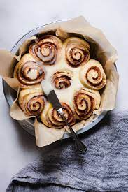

Sourdough Cinnamon Rolls

Description
There's nothing quite like a soft, fluffy cinnamon roll. Especially if it's a sourdough cinnamon roll!
This cinnamon roll recipe combines the best of both worlds: the predictable convenience of fast-acting yeast with the deep nuanced flavors in sourdough.
Ingredients
- 200g active white sourdough starter
- 350g strong white bread flour, plus extra for dusting
- 50g wholemeal flour
- 1 tsp ground cinnamon
- 50g golden caster sugar
- 200ml warm milk
- 1 egg
- 50g butter, softened, plus extra for the tin
- 150g light brown sugar
- 125g butter, softened
- 2 tbsp ground cinnamon
- 2 tbsp golden syrup
- 100g soft cheese
- 150g icing sugar
- ¼ tsp vanilla paste or extract
Steps
- Make sure your starter is active - it should be nice and bubbly. If it isn't, feed it and wait until a tsp of the starter floats in warm water.
- Tip all the ingredients for the dough, except the butter, into a bowl and mix with your hands to form a shaggy dough - make sure all the flour from around the bowl is mixed in. Leave the dough in the bowl, covered with a damp cloth, for 30 mins.
- Work the butter into the dough with 1 tsp salt. Once fully combined, tip the dough onto a surface and knead gently for 5 mins until smooth and springy. Form the dough into a ball and sit back in the bowl. Cover and leave somewhere warm-ish for 3-4 hrs until the dough has just about doubled in size.
- Meanwhile, make the filling by beating together the sugar, butter, cinnamon and a pinch of salt. Set aside at room temperature to keep soft.
- Butter and line a square baking tin - smaller tins (20 x 20cm) will hold nine buns, larger tins (25 x 25cm) will hold 12. Tip the dough onto a floured surface and roll it to a rectangle roughly 50 x 25cm. Spread the filling over the rectangle so it's completely covered. Roll the dough along the long edge into a tight swiss-roll type sausage. Cut your dough into pieces and arrange them, spiral side-up, in the tin. Leave for 1 hr at room temperature, then cover and leave in the fridge overnight.
- Heat the oven to 200C/180C fan/gas 6. Cover the tin with foil and bake on a baking tray (this will stop any leaking mixture dripping into your oven) for 30 mins, then remove the foil and bake for 10-15 mins more to brown slightly.
- Meanwhile, mix the golden syrup with 1 tbsp boiling water. As soon as buns come out of the oven, brush them generously with the syrup, then leave to cool a little. Lift the buns out of the tin while still warm and leave to cool on a wire rack. To make the icing, beat the soft cheese, sugar and vanilla until thick but drizzly. Drizzle over the buns when completely cool.